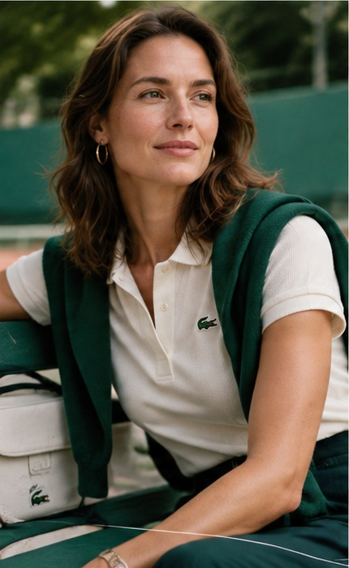
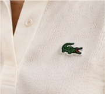
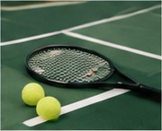
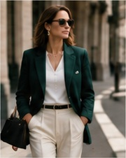
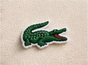
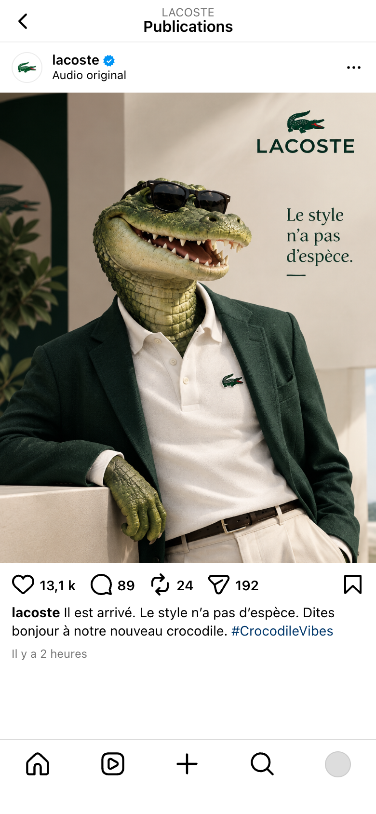
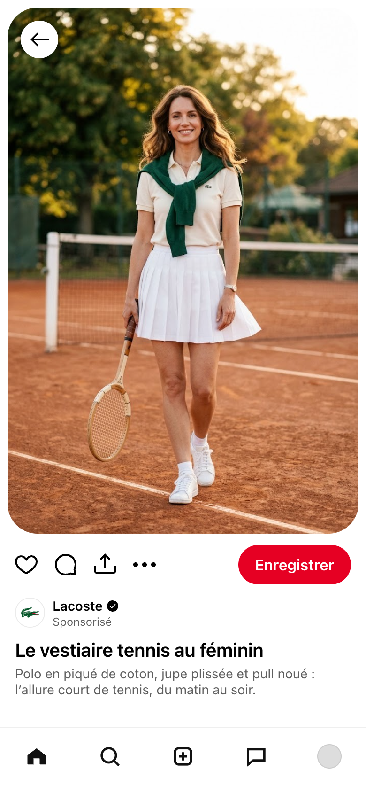
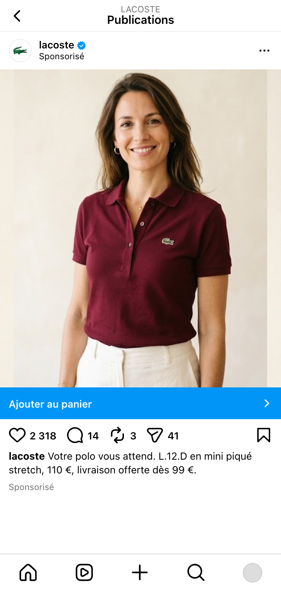
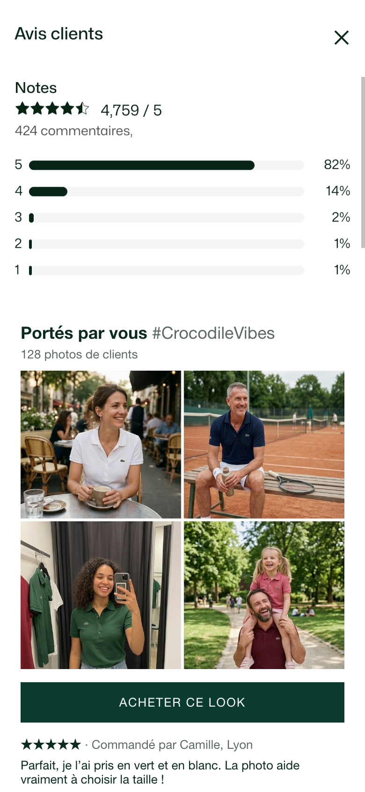
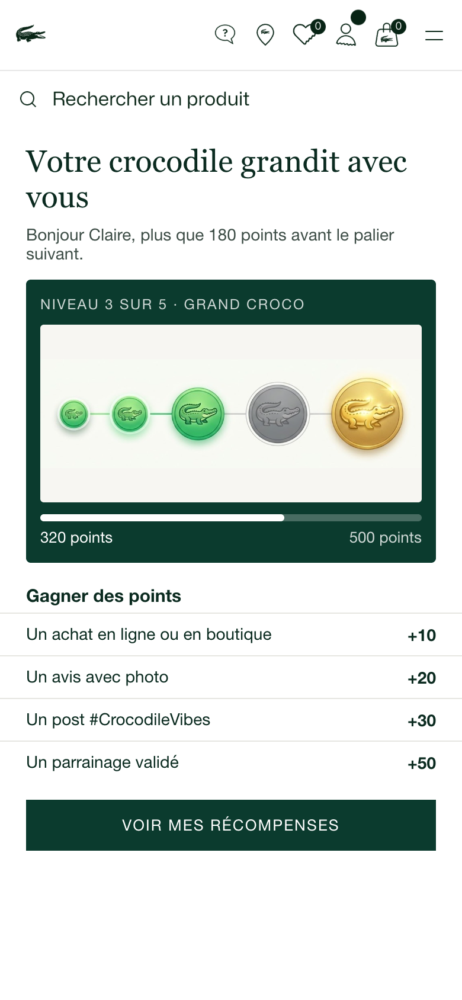

Comment Lacoste peut-elle engager sa communauté sur les réseaux sociaux sans dépendre uniquement de ses ambassadeurs ?
R5.MDEE.13 · Stratégie social media & e-CRM · M. Igor Perez
Romane Da Silva & Sofian Chtioui · BUT3 MDEE · IUT de Roubaix · 1er octobre 2026
1 / 6
Bonjour tout le monde, j'espère que vous allez bien.
Pour cette dernière présentation, on repart de Lacoste, là où on s'était arrêtés. Notre audit avait montré une marque très suivie, mais dont l'engagement repose surtout sur ses ambassadeurs : sans eux, sur Instagram, on retombe à 0,19 % d'engagement.
D'où notre problématique : comment Lacoste peut-elle engager sa communauté sur les réseaux sociaux sans dépendre uniquement de ses ambassadeurs ?
Pour y répondre, on vous présente d'abord la personne qu'on veut toucher. Ensuite, notre plan de contenu, étage par étage du funnel : le TOFU, le MOFU et le BOFU. Et pour chaque action, on vous précise son type dans le modèle PESO : paid, earned, owned ou shared.
Personae





Claire, 37 ans
Cadre en marketing et communication · Lyon
« Des vêtements élégants et de qualité, que je peux porter longtemps, sans sacrifier mon confort. »
Profil
Situation
En couple, mère d'un enfant
Budget
Confortable
Style
Élégant, casual chic, intemporel
Attentes
Qualité, durabilité, confort
Freins
Prix, collections trop classiques, peu de contenus pour les femmes
Réseaux sociaux
Instagram
Pinterest
TikTok
Son parcours d'achat
Découvre une collection sur InstagramTOFU
Visite lacoste.comMOFU
Compare les produitsMOFU
Achète en ligne ou en boutiqueMOFU
Partage, recommandeBOFU
Objectif pour Lacoste
Fidéliser la clientèle féminine adulte, au-delà du tennis
Contenus qui l'intéressent
Idées de looks, collections femme, coulisses et savoir-faire
Source : fiche persona réalisée par Romane Da Silva avec GPT Image 2.5.
2 / 6
Voici Claire, 37 ans, cadre en marketing à Lyon. Pourquoi elle ? Notre audit a montré que Lacoste parle surtout aux hommes. Sur Pinterest par exemple, son plus gros tableau s'appelle Menswear, alors que l'audience française du réseau est majoritairement féminine. Claire, c'est la cliente qu'on veut aller chercher.
Elle connaît Lacoste depuis longtemps et elle aime les pièces de qualité, qui durent. Mais elle a des freins : le prix, des collections qu'elle trouve parfois trop classiques, et peu de contenus pensés pour les femmes de son âge.
Regardez son parcours d'achat : il suit exactement les trois étages du funnel. Elle découvre une collection sur Instagram, c'est le TOFU. Elle va sur le site, compare, puis achète : c'est le MOFU. Et si elle est contente, elle partage : c'est le BOFU.
La fiche a été réalisée par Romane avec GPT Image 2.5. Toutes les actions qui suivent sont pensées pour Claire, avec un budget de 10 000 euros par jour. On commence par le haut du funnel.
TOFU: se faire découvrir
6 500 €/jour65 % du budget de 10 000 €/jour

Reveal de la mascotte
Reel « Comment naît un polo »

Épingle Pinterest femme
Action
Reels sponsorisésInstagram
In-Feed AdsTikTok
Épingles sponsoriséesPinterest
Reveal de la mascotteInstagram et TikTok
Objectif
Notoriété
Notoriété
Notoriété
Notoriété
Type PESO
PAID
PAID
PAID
OWNED
Format & durée
9:16 vertical
15 à 30 s
9:16, court et tendance
15 s
Image ou vidéo 2:3
Campagne de 30 jours
9:16 vertical
15 à 20 s
Message clé
« Comment naît un polo Lacoste »
« Le style n'a pas d'espèce »
« Le vestiaire tennis au féminin »
« Présentation de la mascotte »
Coût & KPI
3 000 €/jourImpressions, nouveaux profils
2 500 €/jour, ≈ 9 € CPMVues, nouveaux abonnés
1 000 €/jourImpressions, enregistrements
0 €Vues, reprises par des tiers
Sources : Igor Perez, support des séances 6 et 7 (slides 109, 116, 130, 142) ; visuels : Romane Da Silva avec GPT Image 2.5, et Gemini.
3 / 6
Premier étage, le TOFU, pour top of funnel. Le but : faire découvrir Lacoste à des gens qui ne la suivent pas encore. C'est là qu'on met l'essentiel du budget, 6 500 euros par jour sur 10 000, parce qu'il faut du volume.
Une question pour vous : si on veut toucher beaucoup de monde nouveau, vite, est-ce qu'on peut compter uniquement sur des publications gratuites ? Pas vraiment : sans achat média, rien ne garantit qu'on sera vu. C'est pour ça que trois de nos quatre actions sont du paid media.
Sur Instagram, des Reels sponsorisés qui racontent comment naît un polo. Vous nous avez montré que les Reels sont en haut du parcours d'achat Instagram, pour 5 à 6 euros les mille impressions.
Sur TikTok, des In-Feed Ads dans le fil « Pour toi », à environ 9 euros les mille vues. On n'a pas pris le TopView : il demande plus de 40 000 euros par jour pour un lancement, soit quatre fois notre budget.
Sur Pinterest, des épingles sponsorisées pour les femmes. C'est le réseau le moins cher de votre support, entre 10 centimes et 1,50 dollar par action, et c'est celui de Claire.
La quatrième action est de l'owned media : la mascotte que vous voyez à gauche, publiée gratuitement sur les comptes de la marque. Reels et TikTok montrent aussi les vidéos aux non-abonnés, donc un bon contenu peut circuler sans budget. Et ce personnage répond à notre problématique : il porte la marque à la place des ambassadeurs, sans contrat.
À gauche, nos trois contenus pour cet étage : l'affiche de la mascotte, le Reel qui montre la fabrication du polo, et l'épingle Pinterest pour les femmes. Un mot sur l'IA : la mascotte a été générée par Romane avec GPT Image 2.5, le Reel et l'épingle avec Gemini. L'image porte d'ailleurs une signature invisible, qui prouve qu'elle vient d'OpenAI. Mais il faut rester prudent : sur le visuel du défi, à la slide suivante, on voit un faux compte, « lacroco_official », et de faux chiffres de likes. Une image générée peut afficher des statistiques qui n'existent pas, on ne doit jamais les présenter comme réelles.
MOFU: convaincre et convertir
3 500 €/jour35 % du budget, + 2 000 € de dotation
Action
Carrousel savoir-faireInstagram
Défi #CrocodileVibesTikTok
Collection Ads femmePinterest
Pub « Ajouter au panier »Instagram
Objectif
Intérêt
Interaction
Intérêt
Conversion
Type PESO
OWNED
SHARED
PAID
PAID
Format & durée
5 visuels 4:5
Épinglé 30 jours
Vidéos 9:16
3 semaines
Vidéo et 4 produits
30 jours
Collection 9:16
30 jours
Message clé
« Du coton au crocodile »
« Montre-nous ton crocodile »
« Composez votre tenue »
« Votre polo vous attend »
Coût & KPI
0 €Enregistrements, partages
2 000 € de dotationVidéos hors ambassadeurs
1 000 €/jourClics produit, enregistrements
2 500 €/jourTransformation, coût par achat
Défi #CrocodileVibes
Carrousel « Du coton au crocodile »

Pub « Ajouter au panier »
Sources : Igor Perez, supports des séances 5 (slide 95), 6 et 7 (slides 119, 131, 142, 143) ; visuels : Romane Da Silva avec GPT Image 2.5, et Gemini.
4 / 6
Deuxième étage, le MOFU. La personne connaît maintenant la marque : il faut la convaincre, puis la faire acheter. Dans votre matrice, cet étage s'appelle d'ailleurs « considération et conversion ». On y met les 3 500 euros par jour qui restent.
Ici, on utilise trois types du modèle PESO.
En owned, un carrousel épinglé en haut du profil Instagram, « Du coton au crocodile », la suite du Reel du TOFU. Pas besoin de payer : les curieux qu'on a attirés arrivent sur le profil, et c'est la première chose qu'ils voient. Et un carrousel, on le fait défiler, donc on prend le temps de s'intéresser.
En shared, le défi #CrocodileVibes, que vous voyez à droite. La mascotte lance le défi, et ce sont les internautes qui créent les vidéos. Ce n'est pas de l'earned, parce que la participation est provoquée par la marque. C'est l'action qui répond le plus directement à notre problématique : la communauté prend le relais des ambassadeurs. D'où notre indicateur : la part des vidéos publiées par des personnes qui ne sont pas ambassadrices. La seule dépense, c'est une dotation ponctuelle de vingt polos personnalisés, 2 000 euros.
Ensuite, deux actions en paid, en retargeting, c'est-à-dire qu'on ne vise que les personnes qui ont déjà réagi. Sur Pinterest, une Collection Ads pour les femmes qui ont enregistré nos épingles. Et sur Instagram, une pub avec un bouton « Ajouter au panier » qui ouvre directement le site dans l'application, panier déjà rempli. Une Story gratuite ne suffirait pas : elle n'est montrée qu'aux abonnés, et ces personnes ne suivent souvent pas le compte. Moins d'étapes, donc moins d'abandons.
À droite, nos trois contenus pour cet étage : la vidéo du défi, où la mascotte lance elle-même le défi à la communauté (un clic pour le son), réalisée par Romane, le carrousel « Du coton au crocodile » et la pub « Ajouter au panier », tous deux générés avec Gemini.
BOFU: faire racheter et recommander
0 € de médiaAméliorations du site, owned media
Fenêtre de sortie

Avis avec photos clients

Jauge Lacoste Members
Action
Achat express « Ma taille »lacoste.com
Fenêtre de sortielacoste.com
Avis avec photoslacoste.com
Jauge Lacoste MembersEspace Members
Objectif
Réachat
Conversion
Preuve sociale
Fidélisation
Type PESO
OWNED
OWNED
SHARED
OWNED
Format & durée
Bouton sur la vignette
Permanent
Fenêtre au départ de la page
Panier gardé 48 h
Photos clients, « Acheter ce look »
Permanent
Jauge à paliers et points
Permanent
Message clé
« Votre taille, en un clic »
« Tu pars déjà ? »
« Portés par vous »
« Votre crocodile grandit avec vous »
Coût & KPI
0 €Réachat, clics jusqu'au panier
0 €, sans remiseAbandons, paniers récupérés
0 €Photos publiées, conversion
0 €, cadeaux existantsMembres actifs, parrainages
Sources : lacoste.com, polo L.12.D et page Lacoste Members (consulté le 26/09/2026) ; Igor Perez, support de la séance 5 (slides 93, 96) ; visuels avec Gemini ; audit avec Claude.
5 / 6
Dernier étage, le BOFU : faire racheter et faire recommander. Vous nous aviez dit en cours qu'on pouvait aussi travailler le site, parce que c'est de l'owned media. On est donc allés sur lacoste.com pour voir ce qui existe déjà et ce qui manque. Ici, aucun achat média : tout le budget est déjà utilisé plus haut.
Le site est déjà bien fait : on peut acheter depuis la page liste, il y a des avis clients et un programme de fidélité, Lacoste Members. Mais il manque quatre choses.
Un : la taille n'est jamais mémorisée. On propose un bouton « Ajouter en 36 » directement sur la vignette, un clic au lieu de trois.
Deux : rien ne retient quelqu'un qui quitte son panier. À gauche, notre maquette animée, montée sur une vraie capture du site : la mascotte revient, sans remise, pour garder l'image premium. Avec les flèches, vous verrez aussi les deux autres contenus de cet étage, les avis avec photos et la jauge Members, générés avec Gemini.
Trois : les 424 avis de ce polo sont uniquement en texte. On ajoute les photos des clients, et c'est du shared : ce sont eux qui créent le contenu.
Et quatre : Lacoste Members ne récompense pas le partage, et ses cadeaux sont tirés au sort. On ajoute une jauge visible, avec des points pour les posts et le parrainage. Pour mesurer, chaque client a un code de parrainage unique, validé après le délai de retour de 30 jours.
Pour cet audit, on s'est aidés de Claude. Il nous a fait gagner du temps, mais il a fallu tout vérifier sur le vrai site : sa première idée de fidélisation, un accès en avant-première pour les clients, existait déjà dans Lacoste Members.
Voilà comment les clients deviennent les nouveaux ambassadeurs de Lacoste. Pour finir, un mot sur nos sources et sur l'IA.
Annexe : sources et outils utilisés
Perez, I. (2026). R5.MDEE.13, support de la séance 5 (slides 93 à 96). IUT de Lille. Moodle.
Perez, I. (2026). R5.MDEE.13, support des séances 6 et 7 (slides 104, 109, 114 à 119, 130, 131, 138 à 143). IUT de Lille. Moodle.
Perez, I. (2026). R5.MDEE.13, syllabus (p. 18 et 19). IUT de Lille. Moodle.
Perez, I. (2026, 24 septembre). Séances 7 et 8 (consigne du plan de contenu, enregistrement). IUT de Lille.
Ecommerce Nation. (2024, 2025). Guide des réseaux sociaux (annexes du cours). ecommerce-nation.fr
Da Silva, R. et Chtioui, S. (2026, 18 septembre). Audit social media de Lacoste (2e livrable).
Da Silva, R. (2026). Fiche persona, mascotte et vidéo du défi (document de travail).
Lacoste. (2026). Polo L.12.D slim fit en mini piqué stretch (fiche produit). lacoste.com. 26/09/2026.
Lacoste. (s. d.). Lacoste Members (programme de fidélité). lacoste.com. 26/09/2026.
Lacoste [@lacoste]. (s. d.). Compte Instagram instagram.com/lacoste. 26/09/2026.
Lacoste [@lacoste]. (s. d.). Compte TikTok tiktok.com/@lacoste. 27/09/2026.
Lacoste. (s. d.). Profil Pinterest pinterest.fr/lacoste. 26/09/2026.
L'IA, avec du recul
Ce que Claude a fait
Conçu les slides
Proposé quelques idées d'actions
GPT Image 2.5 (Romane)
Mascotte, persona, visuel du défi
Gemini
Génération de vidéos
Romane Da Silva & Sofian Chtioui · BUT3 MDEE · IUT de Roubaix · 1er octobre 2026
6 / 6
Toutes nos sources sont ici, ainsi que la façon dont on a utilisé l'IA.
Côté cours, on s'est appuyés sur vos supports des séances 5, 6 et 7, sur le syllabus, et sur ce que vous nous avez dit en TD le 24 septembre pour la consigne du plan de contenu. Côté marque, tout vient de sources réelles : le site lacoste.com, que nous avons consulté le 26 septembre, et les comptes officiels de Lacoste sur Instagram, TikTok et Pinterest.
Pour l'IA, on a utilisé trois outils. Claude nous a aidés à concevoir les slides et nous a proposé quelques idées d'actions. Romane a généré la mascotte, la persona et le visuel du défi avec GPT Image 2.5. Et Gemini nous a servi à générer les vidéos.
Merci de nous avoir écoutés, on est prêts pour vos questions.